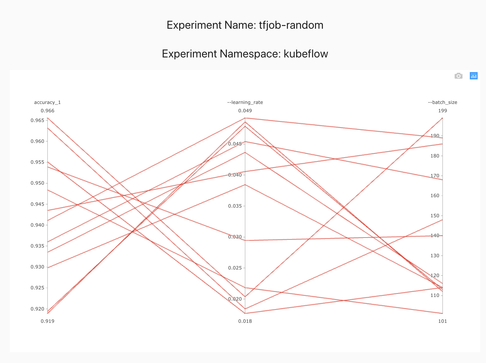
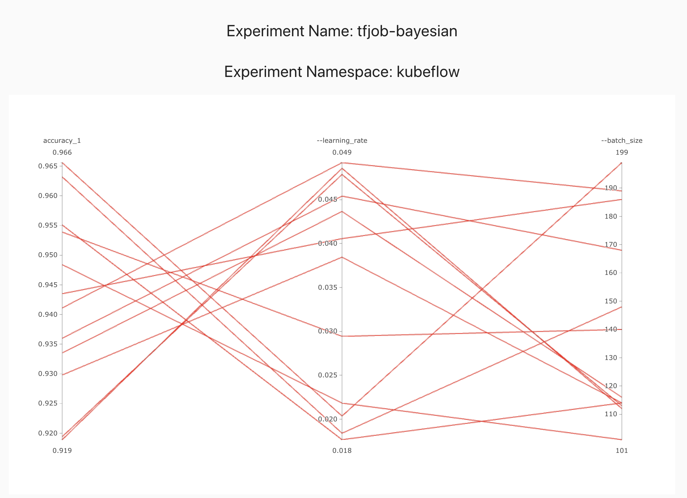
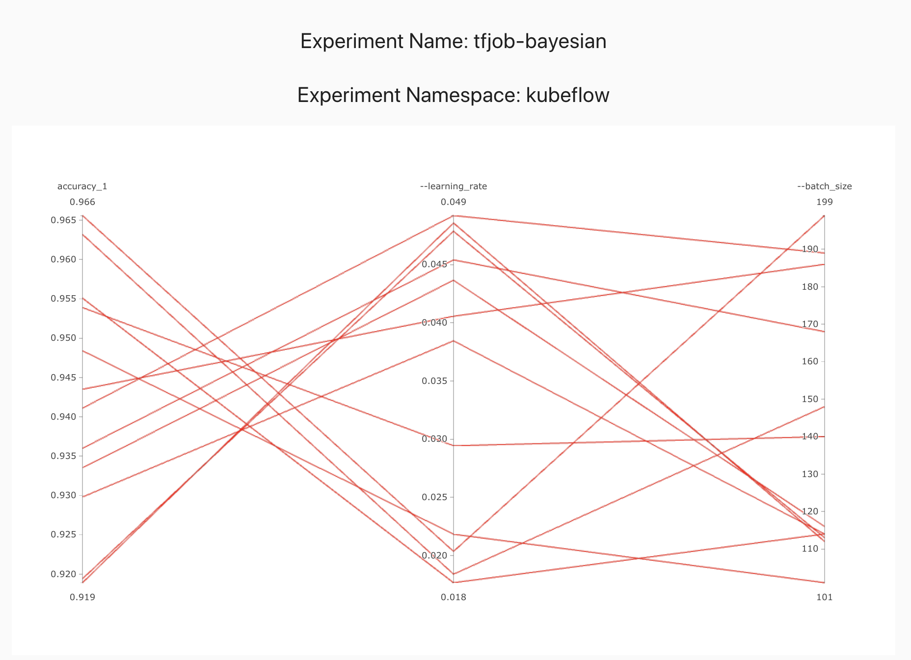

Bayesian Optimization
Model training is an expensive process and each time we want to evaluate a hyperparameter vector, we have to run this process.
This makes grid search very expensive as it is exponential in the number of hyperparameters. Random search may also need many iterations to get to a good hyperparameter vector as it is randomly trying out different options.
Before automatic hyperparameter tuning was wide spread, the common mechanism for finding a good set of hyperparameters was to use Grad Student Descent or Intern Descent. Human reasoning often follows a bayesian model, where we try out something and then iteratively pick what we think is a good next set of values to try. Systems in the real world often fit a probability distribution, like a normal distribution. Bayesian optimization models the hyperparameter vector performance as a distribution, often a Gaussian process. We then try to optimize the performance of this function. We also naturally make the trade off between exploration and exploitation. If the term paper is due tomorrow or if there is a release deadline, we may choose to optimize amongst the known best performing values. If we have a few months to try out different options, we may choose to try out a wider range of values.
Bayesian optimization follows a similar pattern with user configurable parameters to control the amount of exploration vs exploitation. Let us see how this works starting with an example based on the bayes_opt package.
Let us assume that the unknown hyperparameter performance function for our hyperparameter of interest is as follows.

Initially we don't know anything about this function, so let us pick one hyperparameter vector at random and run the model training to evaluate the hyperparameter vector performance.

We can use expected improvement(EI) or Upper Confidence Bound(UCB) as the acquisition or utility function and pick a value that will optimize this. In this example we choose UCB as the utility function. UCB provides a way to configure the amount of exploration we want to allow. We choose the optimal value per the utility function and sample this value.

We repeat this process until we've reach the desired accuracy or we've exhausted our budget.

We can get to a globally optimal value pretty quickly

Here we picked an exploration constant of 5. If we repeated the same experiment with it set to 1, we can see that the algorithm does not explore too much and selects a local maximum instead of a global maximum, but also it converges much faster.

Depending on the available resources of computation and time, we can select different exploration/exploitation policies.
Now let us create a bayesian optimization experiment using Katib.
Experiment
Let us start by creating an experiment.
Random search experiment
apiVersion: "kubeflow.org/v1alpha3"
kind: Experiment
metadata:
namespace: kubeflow
name: tfjob-bayesian
spec:
parallelTrialCount: 3
maxTrialCount: 12
maxFailedTrialCount: 3
objective:
type: maximize
goal: 0.99
objectiveMetricName: accuracy_1
algorithm:
algorithmName: bayesianoptimization
metricsCollectorSpec:
source:
fileSystemPath:
path: /train
kind: Directory
collector:
kind: TensorFlowEvent
parameters:
- name: --learning_rate
parameterType: double
feasibleSpace:
min: "0.01"
max: "0.05"
- name: --batch_size
parameterType: int
feasibleSpace:
min: "100"
max: "200"
trialTemplate:
goTemplate:
rawTemplate: |-
apiVersion: "kubeflow.org/v1"
kind: TFJob
metadata:
name: {{.Trial}}
namespace: {{.NameSpace}}
spec:
tfReplicaSpecs:
Worker:
replicas: 1
restartPolicy: OnFailure
template:
spec:
containers:
- name: tensorflow
image: gcr.io/kubeflow-ci/tf-mnist-with-summaries:1.0
imagePullPolicy: IfNotPresent
command:
- "python"
- "/var/tf_mnist/mnist_with_summaries.py"
- "--log_dir=/train/metrics"
{{- with .HyperParameters}}
{{- range .}}
- "{{.Name}}={{.Value}}"
{{- end}}
{{- end}}
The only difference between random search and bayesian optimization specifications is the algorithm name algorithmName: bayesianoptimization. This is the primary advantage of using Katib. We can easily try different optimizations as they are added to Katib, without having to know too much about their implementation.
Let us create the experiment.
cd $HOME/tutorial/examples/v1alpha3
kubectl apply -f tfjob-bayesian.yaml
Sample Output
experiment.kubeflow.org/tfjob-bayesian created
Check the suggestions generated by the Bayesian optimizer and see how they differ from Grid/Random searches.
kubectl -n kubeflow get suggestions tfjob-bayesian -o yaml
Sample Output
apiVersion: kubeflow.org/v1alpha3
kind: Suggestion
metadata:
creationTimestamp: "2019-10-27T19:18:49Z"
generation: 7
name: tfjob-bayesian
namespace: kubeflow
ownerReferences:
- apiVersion: kubeflow.org/v1alpha3
blockOwnerDeletion: true
controller: true
kind: Experiment
name: tfjob-bayesian
uid: 9b175325-f8ee-11e9-88ef-080027c5bc64
resourceVersion: "168437"
selfLink: /apis/kubeflow.org/v1alpha3/namespaces/kubeflow/suggestions/tfjob-bayesian
uid: 9b1d8453-f8ee-11e9-88ef-080027c5bc64
spec:
algorithmName: bayesianoptimization
requests: 9
status:
conditions:
- lastTransitionTime: "2019-10-27T19:18:49Z"
lastUpdateTime: "2019-10-27T19:18:49Z"
message: Suggestion is created
reason: SuggestionCreated
status: "True"
type: Created
- lastTransitionTime: "2019-10-27T19:19:20Z"
lastUpdateTime: "2019-10-27T19:19:20Z"
message: Deployment is ready
reason: DeploymentReady
status: "True"
type: DeploymentReady
- lastTransitionTime: "2019-10-27T19:20:20Z"
lastUpdateTime: "2019-10-27T19:20:20Z"
message: Suggestion is running
reason: SuggestionRunning
status: "True"
type: Running
startTime: "2019-10-27T19:18:49Z"
suggestionCount: 9
suggestions:
- name: tfjob-bayesian-jtj6kc7w
parameterAssignments:
- name: --learning_rate
value: "0.011057901678989632"
- name: --batch_size
value: "159"
- name: tfjob-bayesian-grk2k47g
parameterAssignments:
- name: --learning_rate
value: "0.010248006471638945"
- name: --batch_size
value: "157"
- name: tfjob-bayesian-cvhmdgmg
parameterAssignments:
- name: --learning_rate
value: "0.048420638587223536"
- name: --batch_size
value: "178"
- name: tfjob-bayesian-4m2qn7dd
parameterAssignments:
- name: --learning_rate
value: "0.0227014807837709"
- name: --batch_size
value: "172"
- name: tfjob-bayesian-gbl5kns7
parameterAssignments:
- name: --learning_rate
value: "0.02417240356426028"
- name: --batch_size
value: "165"
- name: tfjob-bayesian-zxjrcbkj
parameterAssignments:
- name: --learning_rate
value: "0.04274224243794055"
- name: --batch_size
value: "165"
- name: tfjob-bayesian-zwvf497n
parameterAssignments:
- name: --learning_rate
value: "0.047036133061507786"
- name: --batch_size
value: "133"
- name: tfjob-bayesian-xf7vthlw
parameterAssignments:
- name: --learning_rate
value: "0.018676077504433782"
- name: --batch_size
value: "145"
- name: tfjob-bayesian-jhwvd5tn
parameterAssignments:
- name: --learning_rate
value: "0.022390829243915743"
- name: --batch_size
value: "174"
Once the experiment is completed, we can check the optimal parameter values and the accuracy obtained.
kubectl -n kubeflow get experiment tfjob-bayesian -o yaml
Sample Output
apiVersion: kubeflow.org/v1alpha3
kind: Experiment
metadata:
annotations:
kubectl.kubernetes.io/last-applied-configuration: |
{"apiVersion":"kubeflow.org/v1alpha3","kind":"Experiment","metadata":{"annotations":{},"name":"tfjob-bayesian","namespace":"kubeflow"},"spec":{"algorithm":{"algorithmName":"bayesianoptimization"},"maxFailedTrialCount":3,"maxTrialCount":12,"metricsCollectorSpec":{"collector":{"kind":"TensorFlowEvent"},"source":{"fileSystemPath":{"kind":"Directory","path":"/train"}}},"objective":{"goal":0.99,"objectiveMetricName":"accuracy_1","type":"maximize"},"parallelTrialCount":3,"parameters":[{"feasibleSpace":{"max":"0.05","min":"0.01"},"name":"--learning_rate","parameterType":"double"},{"feasibleSpace":{"max":"200","min":"100"},"name":"--batch_size","parameterType":"int"}],"trialTemplate":{"goTemplate":{"rawTemplate":"apiVersion: \"kubeflow.org/v1\"\nkind: TFJob\nmetadata:\n name: {{.Trial}}\n namespace: {{.NameSpace}}\nspec:\n tfReplicaSpecs:\n Worker:\n replicas: 1 \n restartPolicy: OnFailure\n template:\n spec:\n containers:\n - name: tensorflow \n image: gcr.io/kubeflow-ci/tf-mnist-with-summaries:1.0\n imagePullPolicy: IfNotPresent\n command:\n - \"python\"\n - \"/var/tf_mnist/mnist_with_summaries.py\"\n - \"--log_dir=/train/metrics\"\n {{- with .HyperParameters}}\n {{- range .}}\n - \"{{.Name}}={{.Value}}\"\n {{- end}}\n {{- end}}"}}}}
creationTimestamp: "2019-10-27T19:18:49Z"
finalizers:
- update-prometheus-metrics
generation: 2
name: tfjob-bayesian
namespace: kubeflow
resourceVersion: "169359"
selfLink: /apis/kubeflow.org/v1alpha3/namespaces/kubeflow/experiments/tfjob-bayesian
uid: 9b175325-f8ee-11e9-88ef-080027c5bc64
spec:
algorithm:
algorithmName: bayesianoptimization
algorithmSettings: null
maxFailedTrialCount: 3
maxTrialCount: 12
metricsCollectorSpec:
collector:
kind: TensorFlowEvent
source:
fileSystemPath:
kind: Directory
path: /train
objective:
goal: 0.99
objectiveMetricName: accuracy_1
type: maximize
parallelTrialCount: 3
parameters:
- feasibleSpace:
max: "0.05"
min: "0.01"
name: --learning_rate
parameterType: double
- feasibleSpace:
max: "200"
min: "100"
name: --batch_size
parameterType: int
trialTemplate:
goTemplate:
rawTemplate: "apiVersion: \"kubeflow.org/v1\"\nkind: TFJob\nmetadata:\n name:
{{.Trial}}\n namespace: {{.NameSpace}}\nspec:\n tfReplicaSpecs:\n Worker:\n
\ replicas: 1 \n restartPolicy: OnFailure\n template:\n spec:\n
\ containers:\n - name: tensorflow \n image: gcr.io/kubeflow-ci/tf-mnist-with-summaries:1.0\n
\ imagePullPolicy: IfNotPresent\n command:\n -
\"python\"\n - \"/var/tf_mnist/mnist_with_summaries.py\"\n -
\"--log_dir=/train/metrics\"\n {{- with .HyperParameters}}\n
\ {{- range .}}\n - \"{{.Name}}={{.Value}}\"\n {{-
end}}\n {{- end}}"
status:
completionTime: "2019-10-27T19:29:45Z"
conditions:
- lastTransitionTime: "2019-10-27T19:18:49Z"
lastUpdateTime: "2019-10-27T19:18:49Z"
message: Experiment is created
reason: ExperimentCreated
status: "True"
type: Created
- lastTransitionTime: "2019-10-27T19:29:45Z"
lastUpdateTime: "2019-10-27T19:29:45Z"
message: Experiment is running
reason: ExperimentRunning
status: "False"
type: Running
- lastTransitionTime: "2019-10-27T19:29:45Z"
lastUpdateTime: "2019-10-27T19:29:45Z"
message: Experiment has succeeded because max trial count has reached
reason: ExperimentSucceeded
status: "True"
type: Succeeded
currentOptimalTrial:
observation:
metrics:
- name: accuracy_1
value: 0.973200023174
parameterAssignments:
- name: --learning_rate
value: "0.010248006471638945"
- name: --batch_size
value: "157"
startTime: "2019-10-27T19:18:49Z"
trials: 12
trialsSucceeded: 12
In summary, different hyperparameter tuning algorithms have different characteristics and situations where they fit better. Trying out multiple options is easy with Kubeflow/Katib.
 
